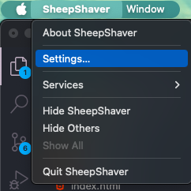
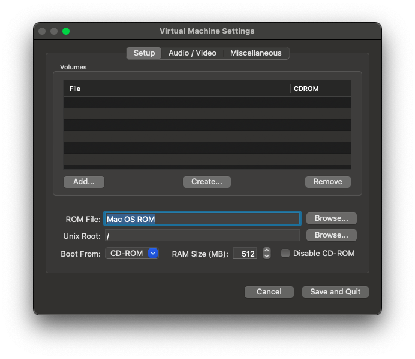

Download the macOS 9 installation ISO from a trusted source. Ensure it is compatible with your emulator. Sites such as:
These sites provide a variety of classic Mac OS versions, including macOS 9.
For emulate macOS 9 on SheepShaver, you'll need the ROM, I reccomend to use the New WORLD ROM, you can find it on:
Note for windows users: If you are on windows, you have to install msys2 and build qemu-scremer with mingw-w64
The classic QEMU with macOS 9 will work, but the audio not, so you can build qemu-scremer, start with:
Homebrew:
brew install libffi gettext glib pkgconfig pixman meson
Macports:
sudo port install libffi gettext glib pkgconfig libpixman meson
Debian/Ubuntu:
sudo apt install git libglib2.0-dev libfdt-dev libpixman-1-dev zlib1g-dev ninja-build libnfs-dev libiscsi-dev
Red Hat/Fedora:
yum install git glib2-devel libfdt-devel pixman-devel zlib-devel bzip2 ninja-build python3 python3-tomli
Suse:
sudo zypper install git-core gcc-c++ make qemu glib2-devel libpixman-1-0-devel clang perf valgrindgit clone -b screamer-v9.1.0 https://github.com/mcayland/qemucd qemu
mkdir build
cd build../configure --target-list=ppc-softmmu
make
Once finished, you should see the qemu-system-ppc execautable
You have to download the macOS 9 requirements before, you can find them on the top of the page
./qemu-img create -f raw macos9.img 10G
./qemu-system-ppc -L pc-bios/ -cpu "g4" -M mac99,via=pmu -m 512 -hda macos9.img -boot d -g 1024x768x32 -display cocoa -hdb ShareDisk.img -cdrom {CD}
Once finished, you can just remove the cdrom argument and use -boot c
./qemu-system-ppc -L pc-bios/ -cpu "g4" -M mac99,via=pmu -m 512 -hda macos92.img -boot c -g 1024x768x32 -display cocoa -hdb ShareDisk.img
SheepShaver is a PowerPC emulator from macOS 8.5 to 9.0.4
Note for OpenCore Legacy Patcher Users: if you have OCLP (like me), prebuilt sheepshaver will not work, for make it work: see here
You have to download the macOS 9 requirements before, you can find them on the top of the page
When you downloaded all the components, make sure to place them in ~/SheepShaver (because on some directories like Desktop SheepShaver will not start)
Make sure also to rename the ron into Mac OS ROM; so without the extension
Now simply open the SheepShaver app, if it crashes, open the ~/SheepShaver_prefs and on the ROM entry set ~/SheepShaver/Mac OS ROM
Once SheepShaver opened, you should see a Floppy with a ? (Question Mark)
So Click on SheepShaver on the top bar and click on settings
Now click an add and select the macOS 9.0.4 iso (or whatever you downloaded)
Now click on create and you can create the Virtua Disk, set 5G of space that are enough
The RAM size is sufficient 512MB